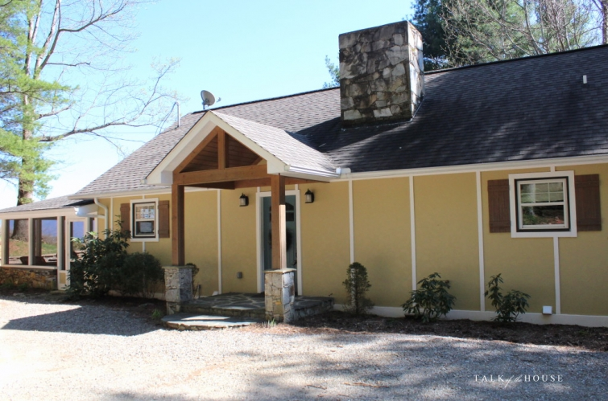
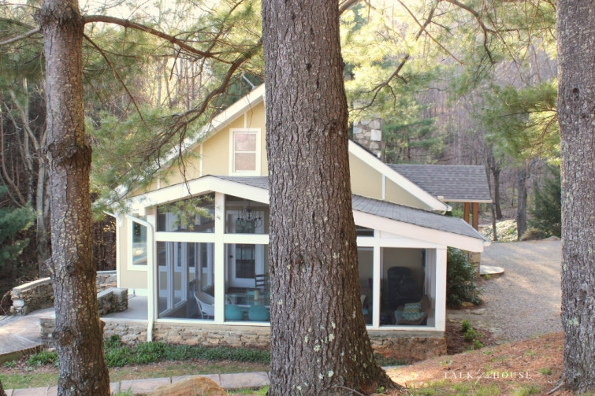
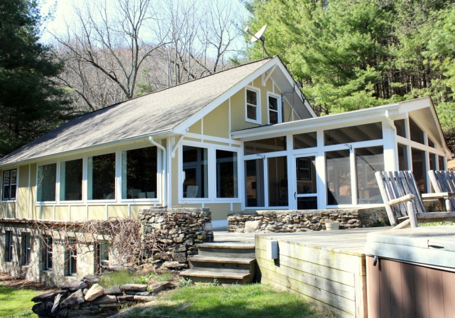

.png)
.PNG)
.PNG)
.PNG)
.PNG)
.PNG)
.JPG)
.JPG)
.PNG)
.PNG)


Welcome back dear friends! I mentioned in our last post that we had been traveling some.  A week or so ago, my husband and I took a trip to North Carolina.  I will give you our itinerary and show you a number of places we visited in another post later in the week, but today I want you to see the house we rented.  The home is owned by Angela who blogs at The Painted House.  I had first read about the cottage when I was following Nester at the Nesting Place blog.
I followed Nester for a number of years, but as her tastes changed into a more modern style, and mine remained the traditionalist here, I stopped following her blog, but I kept remembering the cottage that she had written about here (6 years ago folks!)  I also followed Angela as she documented how her family changed the place from a dark and spooky cabin into a light filled cottage, and she even set up a blog for it.  What I remembered most from all of their posts was that the cabin was peaceful.  After such a busy and hectic March..(well actually a busy and hectic 8 months!) I wanted/needed to escape to a peaceful place.
So the cottage in North Carolina seemed the perfect choice.  And it was. It is located outside of Waynesville on a road all by itself…nothing else around but forests.  When we got out of the car, I inhaled deeply and then exclaimed to my husband, It smells like Highlands!…which is of course the best smell in the entire world in case you didn’t know. 🙂  When I say Highlands, I mean Highlands, North Carolina.  The entire town smells like evergreens mixed with rich dark soil and rain – a smell that no candle has ever been able to emulate for me – and I’ve checked a zillion searching for one.  The photo above shows the view to the front of the cottage, (so you can see how truly secluded it is) and the photo below shows why I instantly smelled that wonderful scent when we got out of the car.  There’s a Christmas tree farm behind the cottage!  Oh how I love you Frasier fir trees!
When I say Highlands, I mean Highlands, North Carolina. Â The entire town smells like evergreens mixed with rich dark soil and rain – a smell that no candle has ever been able to emulate for me – and I’ve checked a zillion searching for one. Â The photo above shows the view to the front of the cottage, (so you can see how truly secluded it is) and the photo below shows why I instantly smelled that wonderful scent when we got out of the car. Â There’s a Christmas tree farm behind the cottage! Â Oh how I love you Frasier fir trees!
Yes, there is a hot tub, and yes, that is the glorious view.
Obviously I took these photos on different days.
The sky didn’t just suddenly cloud up like that.
Here’s the view from the hot tub on the clear day. 🙂
At one end of the cottage is a screened porch. Â The evenings and mornings were very chilly while we were there, but I would love to visit again when the weather warms up and enjoy breakfast on the porch (or grill out in the evening and have dinner there.)
Now I am going to take you inside through the front door rather than through the porch, but I want you to know that the decor is different from what I normally gravitate to.  (No I am not changing my style. 🙂 ) The cottage is more modern than what you normally see here at Talk of the House, but it fit the location perfectly.
When you come into that huge great room you are instantly drawn to that wall of windows that look out to the forests and the mountains beyond.  You also notice all that wonderful wood on the ceiling.  It is in every room of the cottage. 🙂
There is comfortable seating in soothing tranquil colors.
I really liked that painted green chest.
The great room has a huge stone fireplace, but unfortunately the chimney does not work.  So just use the candles in it for ambiance when you go. 🙂
The leather chair is perfectly positioned to take in the mountain view
(or read a book.)
At the other end of the great room is the dining table. Â It is actually an old picnic table that Angela painted.
And her centerpiece is simply a huge dough bowl filled with pinecones. (You can see my similar one in a photo on last year’s Christmas post here. Â I just need to dunk a few of our cones in some paint for a little color contrast.)
Now turn around, and you will see the kitchen.
They took the old upper cabinets off the wall and reused them elsewhere. Â They then needed some space for storage, so she bought this glass front cabinet to house their dishes. Â Handy dandy! Â There is also a walk in pantry located in the space behind that cabinet.
I also liked the cabinets painted green.
Now walk back through the great room so I can show you the master bedroom. Â If you scroll back up about 6 photos, you will see that we walk through an opening with a sliding barn style door to enter the bedroom area.
Angela used blues in this space. Â Don’t you just love that painted blue bed?!
Across from the bed is this chair and a grouping of art done in more blues.
And there is another painted cabinet in this room as well. Â We have never had a television in any of our master bedrooms. Â So it was a nice luxury to be able to watch the tv in bed at night. (We watched and laughed through an old Superman movie with Christopher Reeve that we had seen many many years ago when we were dating.)
Now let’s go across the hall to the master bath.
The large mirror in there made the space seem even bigger.
Besides the claw foot tub, there is also a walk in shower
(which you can see reflected in the mirror.)
Angela is a gifted artist, and she did the cloud painting that hangs beside the bathtub.
And that is all of the North Carolina cottage that I have time to show you today. Â We have toured all the main level spaces, and for part 2 we are going to go downstairs. Yes, there is a downstairs! Â Â
Now don’t forget about the giveaway that is going on here until Sunday night 4/24/16….a $50 gift card for Amazon and Kristy Woodson Harvey’s two wonderful novels.  Did you know she is from North Carolina? 🙂
To enter, all you have to do is simply leave a comment on any/or all posts that publish between 4/17/2016 and 11:59 p.m. Eastern time 4/24/2016 (on the blog itself – not an email reply please)- one comment per post please. Remember I’ll announce the winner, chosen from a random drawing, in the first post that publishes after that.
Thanks for coming on the house tour today, and I will see you for part 2 soon!
Until next time…


.PNG)
A cottage in the woods! Sounds like a little bit of heaven! My best friend lives in High Point, NC so I have been to the state many times. So beautiful!
Beautiful cottage and some great decorating ideas… I may have to paint some furniture.
this cottage out in the forest would be wonderful for shaking off a fast paced life for a short while, but Highlands NC would be my first choice if I were ever to win the lottery. We had lunch at the store in town (a unique experience) and started looking at houses for sale right after! Couldn’t afford them, but a girl can dream.
Hi Kelly! The cottage looks to be perfect for a chilled, relaxing time away …. and that view!!!! They chose the perfect spot for the hot tub and seating. If I could just have my morning coffee sitting there ……
Rosemary
This would be a great place to go and recharge. So beautiful and relaxing.
The cottage looks like the perfect place to unwind! Lved the painted furniture.
Thank you for taking us with you when you travel! You have a great blog—I love your ideas and your super organizing ability. It is a breath of fresh air to my disorganized soul!
I would love to smell the pine scent!
I like the simplicity of the bathroom.
I would be outside enjoying that view if I stayed at this lovely cabin. Hoping to win those books.
Kelly, thank you sharing North Carolina with us. One of my favorite places. Enjoy your blog so much.
What a lovely cottage ( in beautiful surroundings) for a much-needed get-away. So glad the 2 of you were actually a retired couple relaxing together!😉
What a beautiful mountain home! Looks so peaceful and relaxing! 😉
Love this post! I am from North Carolina and now live in Georgia, just outside of Columbus! I’m especially partial to the NC mountains, having graduated from Appalacian State University! Love, love, love your blog and all that you share with your readers! Let me know if you ever find that wonderful scent of Highland, NC in a bottle…I’ll be the next one in line to buy it!!
I would love to visit and stay at that peaceful home. Thanks for showing us North Carolina. Next summer my husband and I want to visit Georgia and the Carolinas. We live in Utah and have visited most of the west, it’s time to see your area. I appreciate all the places you have taken us! I would love to win the books and gift card. Reading is a favorite hobby of mine. Thanks again!
I love the mountains and especially being able to sit on a porch or even sit in the living room, drink my coffee and soak in the peacefulness!! Love her mountain home, as well, and she has it decorated beautifully.
What a haven!
During my career, we once lived for several years in Hendersonville, NC. I’ve played golf several times in Waynesville.. It is a very beautiful place.. Have a great time in your travels!!
Kelly,
Soooo happy you made a trip to our part of the world. This house was fun to see. I need to read the blog about the decorating because I would like to see what it looked like before.
Hope you are having a good week.
DiAnne
The cottage looks lovely and very relaxing. Thanks for sharing it with us.
Hi Kelly, love travelling with you, you find such lovely places. The view from the hot tub is beautiful.
Love this part of NC! A lovely bit of restfulness and a beautiful cabin.
I like that the serenity of the inside lets nature steal the show.
Must have been so peaceful to stay there. I love the soft colors she used through out the home. I am a traditionalist as well, but find the mix pleasurable. That view looking out from the hot tub area is just breath taking, as well as her artwork by the bathtub. She did an amazing job on the clouds….. Soothing.. Thanks for the getaway today Kelly, if only through your blog… 🙂
Love the NC mountains, but I request that you not blog about them because then everyone will want to come! J/k haha
Love the pinecones!
What a lovely cottage and view! The weather looked like it was perfect for your trip, but I think I would also enjoy a rainy day looking out all those glorious great room windows. We almost went to Highlands or Asheville on our recent trip, but in the end, we decided on a B&B in St. Mary’s, GA and went over to Cumberland Island instead. We knew we had to stay pretty close to home this time, and we were not disappointed. But I can’t wait to travel back up into western NC ASAP. Love that area so much!
Great post!
I love that cottage, a few years ago I saw it on The Nester blog…..I need to book a weekend there!
Waynesville, Highlands, Franklin, Silva-wonderful North Carolina towns to visit and enjoy the mountains and the homes. Our son lives in western NC and we visit often. Good for you to have a trip there!
That looks like a perfect place to just BREATHE! And I agree with you about the smell. We were in Banff, Canada many years ago, and walking out our hotel, it smelled like Christmas trees – I loved it!
Have you seen the bleached pinecones on Pinterest? I plan to try that one day, as well as the painted ones.
I love the mountains of North Carolina. Your blog is one of my favorites – enjoy following you.
Kelly, that is my dream mountain house. While our little house will not be that fancy, there are some elements that I am going to think of using if I can. My brother in law lives in Brevard NC and he posted a pic of their front yard the other day and I was just drooling…so beautiful. Thanks for sharing!!
Highlands NC is on my bucket list. Thank you for letting the fans of Talk of the House travel with you.
What a charming cabin! Thank you for sharing the pictures.
Beautiful! I love North Carolina and that house is so cute..
Thanks for all the house tours. We are beginning the process of building our home & enjoy looking.
Looks like a very relaxing place!
I agree with you that the furnishings are mostly too modern. But it does look like a fun place to visit.
Now I want to go to the mtns!
What a wonderful mountain cottage in which to spend a little relaxing time! As always, thank you for sharing the details.
I love Highlands, too!! Love this cabin…look forward to part 2!
So pretty and relaxing! I love the huge dough bowl and the iron bed!! I want!!!
Kelly,
It looks like such a relaxing location. Is there a town nearby?
What a nice getaway.
xo,
Karen
P.S. I hope you received the info on Seattle and Bainbridge Island…2 different emails.
Such a cute cottage and relaxing environment! I hope you enjoyed your trip just the two of you? You sure spent a wonderful time in such a peaceful place!
Wish you a very nice day,
Claire
What a beautiful, serene home.
I can imagine the Frasier fir scent… you’ve tried the Thymes candle? That’s my go to, here in the Michigan woods. Thanks for the tour!
Never had the pleasure of visiting the Highlands area of NC, but this post certainly could persuade me there’s more to the state than the Outer Banks! What an amazingly peaceful cottage-would love to have vacation here…
I have never been to Waynesville but we actually have a cottage in Highlands. That is how I first found your blog as you had done a post on Highlands.I agree with you,the smell is the best!I always enjoy your travel posts.
Eva
What a beautiful place for a relaxing vacation.
This is a wonderful home! You have to have a ton of windows to enjoy the view of the mountains in NC and this doesn’t disappoint. The decor also suits this area (we have a vacation home nearby in Asheville). I really love the porch and all of the rustic touches!!
Thanks for the tour!
jane
What a peaceful place! I felt more relaxed after looking through the pictures.
It looks wonderful! I can’t wait to see where you went in North Carolina. Your trip to Virginia encouraged us to follow in your footsteps there. Love North Carolina mountains so maybe we will follow you there.
Love the mountain home! Especially love the screened in porch.
How funny! I recognized the cottage in the first photo! 🙂 I remembered it too from Nester’s blog. I’m glad it didn’t disappoint. I love the open airy feel and that view!! I can just imagine the smell. My husband and I were going to try to visit that area this spring too, but haven’t made it yet. 😛
Highlands is a beautiful area.
Looks like the cottage in Waynesville would be a great place to spend a few days just relaxing.
Beautiful home. I’m glad you were able to escape for a few days.
Aaahhh, I can smell it! I agree, what a hideaway! Thank you for the tour. It would be hard to stay inside. My favorite part about the house is the bank of windows. I can just imagine the beautiful colors in the fall looking out those windows. I am glad you were able to visit the mountains of our beautiful state. You deserved the retreat. You are invited to the coast sometime too. I promise, you won’t be disappointed with this side of the state either.
Wow … all that sun in the house and absolutely beautiful scenery right outside your windows. It looks like a wonderful spot to live.
I cannot wait for your future travel posts! My husband and I were in Highlands just two weeks ago- our first time.. Beautiful area! Why can’t I have a job traveling to my favorite places!.? Lol!
Love the mountain top view from the deck. Highlands smell…come to Washington state and the fir trees and rain smell will knock your socks off!
I remember reading also on The Nester’s blog about this cottage and thought then how peaceful of a place that would be to go. Glad you were able to do it and get some rest.
What a beautiful retreat! Love the blue bed…
Thanks for sharing such a beautiful place that you visited.
What a beautiful, peaceful cottage in North Carolina. So happy you were able to get away and relax.
What a lovely charming cottage. I’m glad they kept the wood stain on the ceiling and beams to give it some of that rustic look. If it had been painted I think it would have felt too beachy with those colors. You picked a chilly week to come sounds like. April has been colder than March was, but we finally warmed back up yesterday and it was 82 up here at 4000′! Eating breakfast on the porch for the first time this year, with fresh strawberries. We’re on the other side of Asheville from Waynesville. Glad you enjoyed your trip to our beautiful mountains. We still don’t have any leaves on our trees up here even though it was 82!
Love the blue front door and the white tobacco basket. Both are very unique.
Thank you for the give away!
Shelley
Love following your blog for the decor, but I also live in the Atlanta area so the posts about nearby areas are valuable to me also.
Love your blog. The cottage is lovely. Looks so relaxing there.
Love love this cottage
Love this cottage. I love my North Carolina home also!
Looks like a wonderful place to stay. I love the Waynesville area. We have a friend who has a cabin near there – nothing fancy like this one, but a great , peaceful getaway. I would really love that gift package to enjoy in such a peaceful setting.
Love, love this, so peaceful and what a view!!
I live on the NC coast and LOVE that mtn. home. Would love to stop by sometime and visit! Great photos of the inside!
Love the soft grays and aqua so. So soothing as if all is right in the world.
The farm sink and claw foot tub are calling my name! Bless you for sharing.
Oh, Kelly, you were so close!! Love the darling cottage. When you visit the cottage again, you must, just must skip on over to Maggie Valley for a weekend evening and enjoy some mountain dancing/clogging at the Stompin Ground! They also have some great places to eat as well. On another note, I’m glad I’m not the only one who notices smells. My favorite place to visit is Jackson Hole and The Tetons, the entire NW section of Wyoming, and my favorite thing to do is a sunset float down the Snake River. Our guide decided to take a small branch not on his usual route. We went through an area that had the same smell you described and it was something I have never, never forgotten. It was just delicious with that clean, piney smell. Thanks so much for all your lovely posts.
That was fun! I like the way the cabin was decorated. I do like staying in a place that is decorated differently than I decorate my own house. Oh, andI do love a dough bowl. You would not be surprised to know that seashells are in our dough bowl. I know what you mean about the smell of the mountains. It makes you want to breathe deeply. That view was ok…but it will be so much prettier when the mountains “green up” or in the fall when the colors are so vibrant. So, you will have to come back.
Beautiful cottage. Thanks for sharing!
Would love to visit Waynesville again. Beautiful countryside – love the home you rented.
Such a beautiful mountain home! I loved the use of space and the uncluttered feeling in it. The table she used for the sofa table was perfect! Thanks for sharing.
Loved seeing this NC cottage. I’m currently in NC visiting my son and family. Hopefully we have time to go to the mountains.
Looks like a great place to de-compress. I am book marking this post for when we take that bucket list trip up the east coast
What a lovely serene mountain cabin! And I know you truly enjoyed the peace and quiet. Glad you are finally able to do more traveling and the things you and your husband want to do. Thanks for sharing! Loved the openness and the furnishings were quite different but I did like it. I enjoyed her paintings especially the one over that soaking tub. Looking forward to the next installment!
What a gem! The colors and surrounding scenery set the mood for a relaxing retreat 😊
Hoping to win your book giveaway. Beautiful home in your post today!
It is always a pleasure to take a virtual trip with you!
Love North Carolina. What a peaceful place. Love reading your blog.
Love this cottage with its peaceful and beautiful view. I too could smell the evergreeens! Can’t wait to see the rest of the cottage.
Wow! Beautiful North Carolina views! Love the mountains! Thank you, Kelly, for a chance at winning your giveaway! Barbara S.
Love your blog..and all the great ideas for parties ..cottage looks sweet…
Beautiful home! Thanks for sharing!
I know that Hghlands smell! If only it could be made into a candle! Lovely fragrance, Gorgeous views!
Beautiful! So very serene. I know you had a wonderful trip, you can’t beat our North Carolina mountains.
Cindy
*happy sigh* You always go to such gorgeous places – I am very jealous, but thank you for sharing this with us! I love painted wood. I also really enjoyed North Carolina when we visited a couple of years ago, so eagerly await hearing more! 🙂
Such a treat to be able to relax! Often it’s nice to spend time in a house different from yours for a different view of the world. I would be able to get some serious writing done in a place like that! Glad you had a good time and can’t wait to read your report about the surrounding area.
So happy you had a relaxing get away. We all need those! Thanks for sharing all your adventures. I loved the views from the cottage!
What a beautiful, relaxing getaway!! Thanks for sharing with us!
Such a beautiful view. It must have been so relaxing to be there.Love the painted furniture.
What a beautiful place – and view! It has such a relaxing vibe with the natural elements and soft colors.
Shelley
I love the green cabinets in the kitchen. Looks like the cottage was a great place to relax!
Love the beautiful view.
Love this cottage and the surrounding area is beautiful and it looks very restful! Looking forward to hearing about the things you did in the Waynesville area. So glad you were able to spend time in this gorgeous area of the country!!
Spent the past ten days with dear friends in both North and South Carolinas. The weather was sensational,and the beauty of the trees and flowers in April was a joy to behold. We traveled back to Ohio yesterday on I-77,and were able to view the changes of spring in five different states.
Love the cottage in North Carolina! It looks peaceful, I would not mind visiting there
Wow! What a beautiful place!